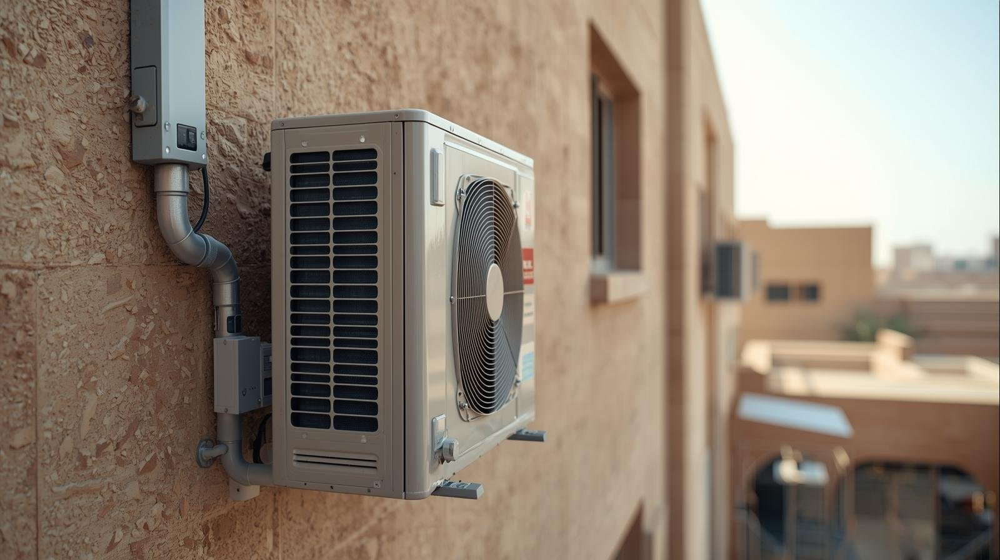

نقل مكيفات سبليت الرياض 0541145506

الارتفاع الكبير والمستمر فى درجات الحرارة أدى إلى أن أصبح المكيف جهازًا لا غنى عنه أثناء العيش فى الرياض وخصوصًا فى الصيف، و أصبح الناس عندما ينتقلون لمنزل جديد أو يريدون شراء جهاز جديد يحتارون في طريقة النقل دون أن تصاب بخدوش أو كسور، شركة نقل الرياض تقدم لكم خدمة نقل مكيفات سبليت الرياض بطريق آمنة وسليمة بواسطة سيارات مجهزة لنقل المكيفات، تواصل الآن مع شركة نقل الرياض واحصل على خدمة لا مثيل لها.
أهمية خدمات نقل مكيفات سبليت الرياض بطريقة احترافية ؟
عملية نقل مكيفات سبليت ليست عملية سهلة يمكن الاستغناء عنها وإنما هي عملية تحتاج لخبرة فنية عالية وأدوات ضرورية وليست مجرد عملية فك وتركيب، الاستهتار بالخدمة و الاستعانة بفنيين غير موثوق منهم يعرض جهازك لكثير من المخاطر كتلف الأنابيب والأسلاك، تسرب غاز الفريون، تراجع كفاءة التبريد بعد النقل مما يؤدى إلى اضطرارك لدفع تكاليف إضافية للصيانة أو الإصلاح.
في شركة نقل الرياض افضل شركة نقل اثاث بالرياض، نعمل وفق المعايير الفنية الدقيقة وتتبع معايير السلامة والأمان لضمان نقل المكيفات دون أى أضرار، بالإضافة إلى أن الفريق يتأكد من أن المكيف يعمل بكفاءته الكاملة بعد التركيب.
خطوات نقل مكيفات سبليت الرياض دون التسبب في تلف الوحدة
شركة نقل الرياض تضم فريق خبير من الخبراء والفنيين متخصصون فى نقل مكيفات سبليت الرياض ويتبع خطوات منظمة ودقيقة لضمان عملية نقل آمنة للمكيف دون أى أضرار.
إليك خطوات نقل المكيفات:
- فصل الكهرباء عن المكيف للتأكد من السلامة.
- سحب غاز الفريون باستخدام معدات خاصة وحفظه بطريقة تمنع فقدانه.
- فك الوحدة الداخلية بحرص مع فصل المواسير والكابلات.
- فك الوحدة الخارجية باستخدام أدوات مخصصة لحمايتها من الخدش والتلف ولحماية منظر الجهاز الخارجى.
- تغليف المكيف بالكامل لضمان حمايته أثناء النقل.
- النقل بسيارات مجهزة لضمان ثبات المكيف وعدم تعرضة للاهتزازات أو السقوط.
- إعادة التركيب فى المواقع الجديدة وضبط مستوى الجهاز.
- اختبار التشغيل للتأكد من كفاءة التبريد بعد النقل.
شركة نقل الرياض ليست فقط شركة نقل المكيفات، وإنما هى أيضًا شركة متخصصة فى تركيب وصيانة المكيفات بكل أنواعها وموديلاتها، إتصل الآن من أى مكان داخل الرياض بشركة نقل الرياض لنقل مكيفك وتركيبة أو صيانتة إن احتاج، للتواصل اضغط على أيقونة الواتس اب أو اتصل بالرقم الخاص بخدمة العملاء والمتاح على مدار اليوم.
أفضل شركة نقل مكيفات سبليت الرياض بأسعار مناسبة
هل تبحث عن أفضل شركة نقل مكيفات سبليت في الرياض؟ دعنى أخبرك بها شركة نقل الرياض هى الأفضل فهى شركة متخصصة فى نقل وتركيب مكيفات سبليت و هى تضم فريق من الخبراء والفنيين المتخصصين في صيانة وتركيب مكيفات سبيلت بجميع انواعه وموديلاته، وتشمل الخدمة الفك والنقل والتركيب كل هذا فى زيارة واحدة و بأسعار تنافسية ومناسبة، وتقدم الشركة عروضًا وتخفيضات عند نقل أكثر من وحدة تكييف أو إن كنت من عملائنا المميزين، شركة نقل الرياض تقدم أفضل خدمة وأفضل سعر للتواصل اضغط على أيقونة الواتس اب أو اتصل بخدمة العملاء المتاحة على مدار 24 ساعة.
متى تحتاج إلى طلب خدمة نقل مكيفات سبليت الرياض؟
هناك العديد من الأسباب التي ستدفعك إلى الاستعانة بخدمة نقل مكيفات سبليت الرياض كحاجتك إلى إعادة توزيع المكيفات داخل نفس المبنى، إجراء أعمال صيانة أو ترميم للمكان، بيع أو شراء مكيفات مستعملة، الرغبة في تحسين توزيع التبريد فى المكان، أن تنقل إلى منزل جديد أو مكتب جديد، شركة نقل الرياض تقدم أيضًا خدمة نقل الأثاث ولها خبرة كبيرة فى هذا المجال لذا إن احتجت إلى نقل أثاثك أو مكيفك فلا تتردد فى التواصل مع الشركة.
أسعار نقل مكيفات سبليت الرياض حسب عدد الوحدات والمسافة
تختلف أسعار نقل المكيفات فى شركة نقل الرياض حسب عدد الوحدات والمسافة المقطوعة من المكان القديم إلى المكان الجديد وحسب الخدمة المقدمة إن كانت تشمل فك وتركيب و نقل فقط أم يحتاج إلى صيانة بعد التركيب، كما أن شركتنا تقدم عروضُا وتخفيضات خاصة عند نقل أكثر من مكيف، لا تتردد فى التواصل مع شركتنا وسنقدم لكم أفضل الخدمات بأحسن الأسعار، للتواصل اضغط على أيقونة الواتس اب.
نصائح قبل طلب خدمة نقل مكيفات سبليت الرياض
إليك بعض النصائح الهامة التى يجب الأخذ بها قبل التواصل مع أى شركة لطب الخدمة :
- التأكد من سمعة الشركة قبل الاتصال فلا تتصل إلا بشركة مضمونة كشركة نقل الرياض لتجنب المخاطرة بسرقة جهازك أو إتلافه من قبل غير المتخصصين.
- تحديد عدد المكيفات التي ترغب بنقلها وإبلاغ الشركة بها.
- تحديد عنوانك بدقة لتستطيع الشركة تقدير المسافة بين الموقع القديم والجديد الذى ستذهب إليه.
- التأكد من أن السعر يشمل جميع الخدمات (فك، نقل، تركيب).
- الاتفاق على الموعد المحدد لتجنب التأخير.
- التأكد من أن الشركة توفر ضمان على الخدمة.
هل تشمل خدمة نقل مكيفات سبليت بالرياض الفك والتركيب؟
نعم، فشركة نقل الرياض تقدم لك خدمة شاملة لا تحتاج معها إلى التواصل مع شركات أخرى وتشمل الخدمة فك المكيف بواسطة فنيين، نقل المكيفات بسيارات آمنة ومجهزة، تركيب المكيف وتشغيله فى الموقع الجديد والتأكد من سلامته.
اتصل الآن بشركة نقل الرياض ولا تتأخر فنحن فى خدمتك 24 ساعة للتواصل اضغط على أيقونة الواتس اب.
الفرق بين نقل مكيفات سبليت الرياض ذاتيًا و بواسطة فني متخصص
نقل المكيفات يحتاج إلى خبرة فنية ومهنية عالية لضمان سلامة الجهاز، فإن نقلت الجهاز بمفردك قد يؤدى هذا إلى تعرض الجهاز للمخاطر كفقدان غاز الفريون أو سقوط المكيف أثناء نقله بالسيارة مما يعرضة إلى إحتمالية عالية للكسر أو التلف مما يضطرك إلى تحمل تكلفة إصلاح وصيانة إضافية، لذا تواصل مع شركة نقل الرياض لنقل مكيفك من أى مكان داخل الرياض، للتواصل اضغط على أيقونة الواتس اب.
كيف تتواصل مع أقرب فني متخصص فى نقل مكيفات سبليت الرياض؟
شركة نقل الرياض توفر لكم جميع سبل التواصل المتاحة منها
- تواصل على الرقم الخاص بها.
- للتواصل واتساب اضغط على ايقونة الواتس اب.
تقدم شركة نقل الرياض خدمات تشمل جميع مناطق وأحياء الرياض، استجابة سريعة للجميع خلال 24 ساعة .
في الختام، عند الانتقال من بيت لآخر يبحث الكثير من الناس عن شركة موثوقة لنقل المكيفات لتنقل مكيفهم، ويرغب بعض الأشخاص الاستمرار مع الشركة التى تعاملوا معها طوال العمر دون البحث فى كل مرة ينتقلوا فيها من مكان لآخر عن شركة نقل، شركة نقل الرياض هى الشركة التى تبحث عنها، فهي شركة رائدة فى مجال نقل وتركيب مكيفات سبليت بجميع أنحاء الرياض، شركة نقل الرياض ليست مجرد شركة نقل مكيفات وإنما هى أيضًا متخصصة فى جميع أنواع خدمات نقل الأثاث اتصل بنا في أي وقت تحتاج فيه إلى خدمتنا، للتواصل اضغط على أيقونة الواتس اب أو اتصل بالرقم الخاص بخدمة العملاء والمتاح على مدار 24 ساعة.
الأسئلة الشائعة حول نقل مكيفات سبليت الرياض
كم يستغرق وقت نقل مكيف سبليت بالرياض؟
عادة يستغرق من ساعة إلى ساعتين حسب المسافة وسرعة الوصول.
هل يتم فقد الفريون أثناء النقل؟
مع شركة نقل الرياض لا يتم فقد الفريون أثناء النقل لأننا نقوم بسحبه وحفظة بالاستعانة بأدوات خاصة لمنع تبخره وفقدانه.
هل تقدمون ضمان على الخدمة؟
نعم، نقدم ضمان على جميع الخدمات.